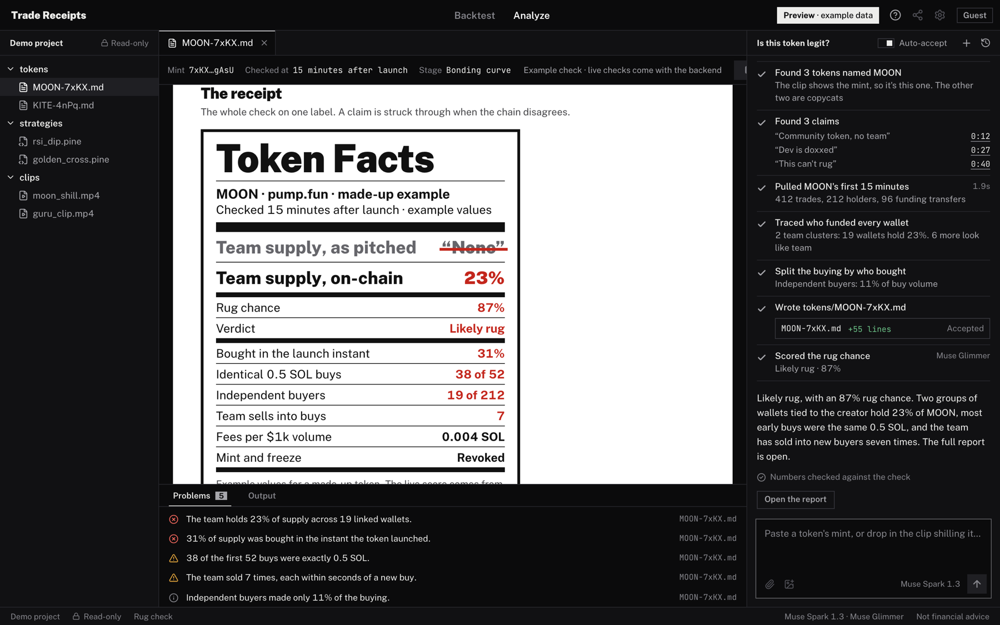

Check the token before you buy it.
Paste a pump.fun token or drop in the clip shilling it.
MOONexample token, made up
“Community token, no team.”moon_shill.mp4 at 0:12
MOONexample token, made up
“Community token, no team.”
The team holds 23%.19 linked wallets, one funder
Every check ends on a receipt.
Token Facts puts the pitch beside the chain, with every number traced to the transactions behind it.
